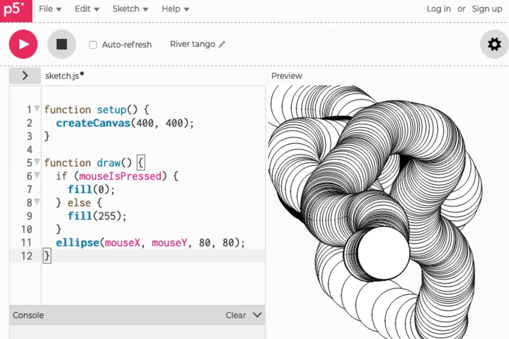

Em p5.js, podemos criar projetos visuais interativos, como uma visualização de dados climáticos. A ideia
seria usar dados de temperatura, umidade e vento de diversas cidades para gerar
círculos dinâmicos na tela. O tamanho, a cor e a direção de elementos visuais
representariam essas informações. A interação do usuário, como passar o mouse ou
clicar, poderia revelar detalhes adicionais ou gráficos históricos.
O código em p5.js se estrutura principalmente em duas funções: setup(), que roda uma vez para
configurações iniciais (como criar a tela e carregar dados), e draw(), que executa em
loop para desenhar as formas na tela com base nos dados. Para a interatividade, funções
como mousePressed() e mouseMoved(), juntamente com as coordenadas do mouse (mouseX, mouseY), permitiriam
criar respostas dinâmicas às ações do usuário. Um projeto completo exigiria mais código para o
tratamento de dados e a criação de uma interface visual clara. O p5.js editor oferece um ambiente
prático para desenvolver e testar essas ideias diretamente no navegador.
